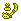
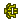

结云木 | 怪物猎人双十字
结云木 - 【MHXX】怪物猎人双十字
| 名称 | 结云木 ゆくも的色 |
||||
|---|---|---|---|---|---|
| 稀有度度 | 4 | 所持 | 99 | 売値 | |
| 説明 | 结云村近辺的山に生える良质之木。し之やかで加工がしやすい。 | ||||
| [入手] ふらっ与 猎人 |
[ふら] 【下位】溪流 1个 8% [ふら] 【上位】溪流 2个 10% |
| [入手] 地图 |
[下位★溪流] 4-2 采取 3-5回 90% [下位★溪流] 5-3 采取 3-5回 90% [下位★溪流] 9-3 采取 3-5回 90% [上位★溪流] 4-2 采取 3-5回 30% [上位★溪流] 5-3 采取 3-5回 30% [上位★溪流] 9-3 采取 3-5回 30% [G级★溪流] 4-2 采取 3-5回 10% [G级★溪流] 5-3 采取 3-5回 10% [G级★溪流] 9-3 采取 3-5回 10% |
| [入手] 任务报酬 |
[主任务] 村★2青熊兽 6% [主任务] 村★2消灭溪流的雌狗龙 6% [主任务] 村★2半夜的狗龙群 6% [主任务] 村★2梦之蘑菇汁 6% [主任务] 村★2交纳暖暖的竹笋 6% [主任务] 村★2交纳溪流的精算道具 6% [主任务] 村★3狩猎小野猪！ 6% [主任务] 村★3为谁做好吃的蛋？ 6% [主任务] 村★3吵闹的森林 6% [主任务] 村★3皇家蜜蜂猎人 6% [主任务] 村★3香气四溢的溪流矿石 6% [主任务] 村★4行商修行 6% [主任务] 村★4可疑的工作 6% [主任务] 村★6高难度：兜帽在溪流！ 2个 8% [主任务] 村★8偶尔也来钓个鱼吧？ 2个 8% [主任务] 集★1溪流的头、野猪王 6% [主任务] 集★1传说中的菜谱不可或缺的东西 6% [主任务] 集★1狩猎水兽！ 6% [主任务] 集★1水生兽讨伐作战！ 6% [主任务] 集★1溪流的狗龙讨伐作战 6% [主任务] 集★1挖掘花香 6% [主任务] 集★1溪流的招财猫 6% [主任务] 集★2消灭溪流的雌狗龙 6% [主任务] 集★4飞甲虫讨伐推荐 2个 8% |
| [用途] 武器 |
 结云大剑 [生产] 2个 结云大剑2 [强化] 1个 结云大剑3 [强化] 2个 结云大剑 [生产] 2个 结云大剑2 [强化] 1个 结云大剑3 [强化] 2个  ユクモノ摇晃イド(结云巨刃) [强化] 4个 ユクモノ摇晃イド(结云巨刃) [强化] 4个  龙之栖所 [生产] 3个 奶酪搅拌棒 [生产] 4个 奶酪搅拌棒3 [强化] 3个 龙之栖所 [生产] 3个 奶酪搅拌棒 [生产] 4个 奶酪搅拌棒3 [强化] 3个  结云太刀 [生产] 2个 结云太刀2 [强化] 1个 结云太刀3 [强化] 2个 结云太刀 [生产] 2个 结云太刀2 [强化] 1个 结云太刀3 [强化] 2个  真结云太刀 [强化] 4个 真结云太刀 [强化] 4个 云羊鹿杖 [生产] 3个  结云鉈 [生产] 2个 结云鉈2 [强化] 1个 结云鉈3 [强化] 2个 结云鉈 [生产] 2个 结云鉈2 [强化] 1个 结云鉈3 [强化] 2个  真结云鉈 [强化] 4个 真结云鉈 [强化] 4个  结云之双剑 [生产] 2个 结云之双剑2 [强化] 1个 结云之双剑3 [强化] 2个 结云之双剑 [生产] 2个 结云之双剑2 [强化] 1个 结云之双剑3 [强化] 2个  真结云之双剑 [强化] 4个 狩丸子【白团】 [生产] 4个 真结云之双剑 [强化] 4个 狩丸子【白团】 [生产] 4个 结云木锤 [生产] 2个 结云木锤2 [强化] 1个 结云木锤3 [强化] 2个  真结云木锤 [强化] 4个 真结云木锤 [强化] 4个 セロヴィセロ [生产] 3个 结云笛 [生产] 2个 结云笛2 [强化] 1个 结云笛3 [强化] 2个 真结云笛 [强化] 4个  カエルクラフト [生产] 3个 リュウノトドロキ [生产] 3个 贝尔纳ル [生产] 3个 カエルクラフト [生产] 3个 リュウノトドロキ [生产] 3个 贝尔纳ル [生产] 3个 结云之枪 [生产] 2个 结云之枪2 [强化] 1个 结云之枪3 [强化] 2个  真结云之枪 [强化] 4个 真结云之枪 [强化] 4个  合战枪 [生产] 3个 真空搋子2 [强化] 3个 合战枪 [生产] 3个 真空搋子2 [强化] 3个  结云之铳枪 [生产] 2个 结云之铳枪2 [强化] 1个 结云之铳枪3 [强化] 2个 结云之铳枪 [生产] 2个 结云之铳枪2 [强化] 1个 结云之铳枪3 [强化] 2个  真结云之铳枪 [强化] 4个 真结云之铳枪 [强化] 4个  竹铳枪【驱鸟】 [生产] 3个 竹铳枪【驱鸟】 [生产] 3个  结云之斩击斧 [生产] 2个 结云之斩击斧2 [强化] 1个 结云之斩击斧3 [强化] 2个 结云之斩击斧 [生产] 2个 结云之斩击斧2 [强化] 1个 结云之斩击斧3 [强化] 2个  真结云之斩击斧 [强化] 4个 真结云之斩击斧 [强化] 4个 ロッドングリ [生产] 3个  掃棍ミガキ [生产] 3个 结云弓 [生产] 2个 结云弓2 [强化] 1个 结云弓3 [强化] 2个 结云弓 [生产] 2个 结云弓2 [强化] 1个 结云弓3 [强化] 2个  真结云弓 [强化] 4个竹取弓 [生产] 3个 花之塔 [生产] 3个  结云之弩 [生产] 2个 结云之弩2 [强化] 1个 结云之弩3 [强化] 2个 结云之弩 [生产] 2个 结云之弩2 [强化] 1个 结云之弩3 [强化] 2个  真结云之弩 [强化] 4个 真结云之弩 [强化] 4个  花蕾弩枪 [生产] 3个 隐匿之钟 [生产] 3个 花蕾弩枪 [生产] 3个 隐匿之钟 [生产] 3个 雪鹿弩 [强化] 2个 结云重弩 [生产] 2个 结云重弩2 [强化] 1个 结云重弩3 [强化] 2个  真结云重弩 [强化] 4个 真结云重弩 [强化] 4个  艾露猫大炮2 [强化] 2个 艾露猫大炮2 [强化] 2个 |
| [用途] 防具生产 |
结云斗笠 [生产] 1个 以太帽 [生产] 1个 丸鸟面具 [生产] 3个 泡狐头盔 [生产] 4个 撫子【布冠】 [生产] 2个 结云上衣 [生产] 2个 以太外衣 [生产] 1个 撫子【花衣】 [生产] 2个  结云护手 [生产] 2个 结云护手 [生产] 2个  以太手腕 [生产] 1个 以太手腕 [生产] 1个  撫子【蕾袖】 [生产] 2个 撫子【蕾袖】 [生产] 2个 结云腰带 [生产] 1个  以太裙腰 [生产] 1个 以太裙腰 [生产] 1个 撫子【枝垂】 [生产] 2个 结云长裤 [生产] 2个  以太重足 [生产] 1个 以太重足 [生产] 1个 撫子【球袴】 [生产] 2个 |
| [用途] 防具强化 |
撫子/桔梗系列 Lv4 [强化] 2个 |
| [用途] 納品委托 |
[納品委托] 交易船的船长的委托3 必要道具：结云木 x5 起泡滑液 x2 海綿质的上皮 x1 [納品委托] 波克村的受付嬢的委托1 必要道具：结云木 x4 雪山鹿的角 x2 巨兽的鼻棘 x1 |